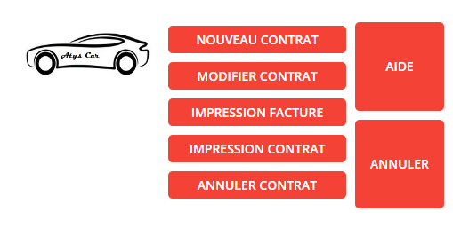
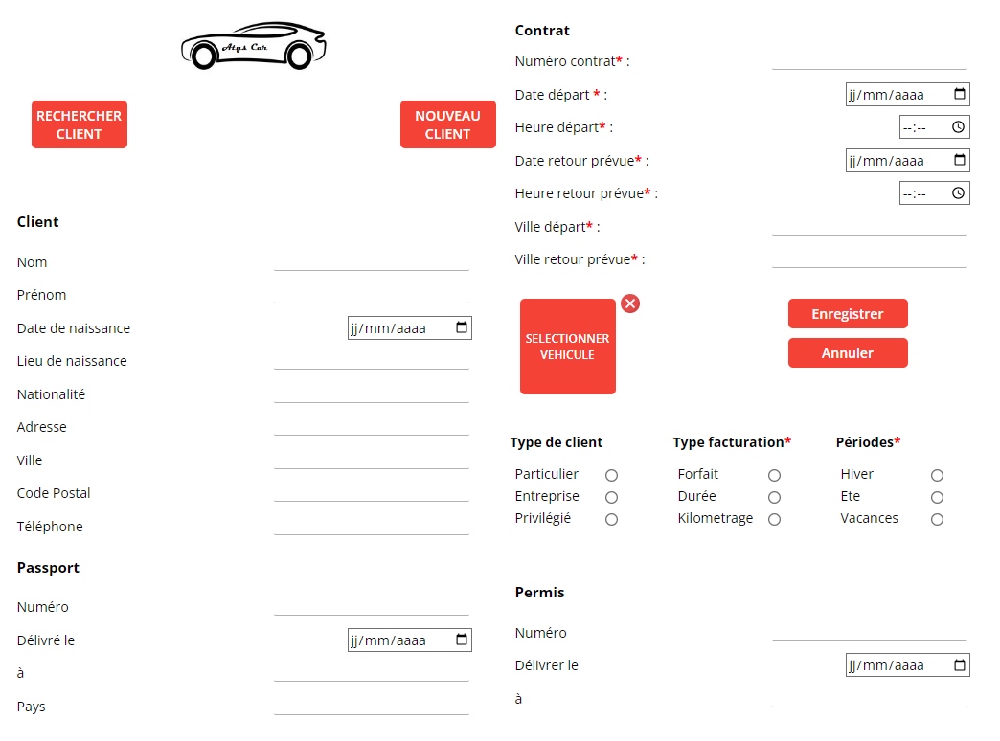
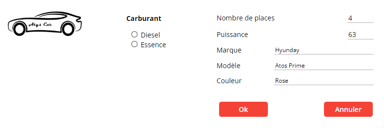

Guide d'utilisation de l'application ATYS CAR
Bienvenue dans le guide d'utilisation de l'application ATYS CAR. Ce guide fournira des aides et conseils concernant les différentes fonctionnalités de l'application.
Louer un véhicule
La page "Louer un véhicule" contient plusieurs fonctions de gestion de contrat et d'impression de facture. Grâce à elle, vous pourrez :
- Créer un nouveau contrat
- Modifier un contrat existant
- Imprimer une facture
- Imprimer un contrat existant
- Annuler un contrat existant
Créer un nouveau contrat
La fonctionnalité "Créer un nouveau contrat" permet, comme son nom l'indique, de créer de nouveaux contrats avec des clients existants ou non.
1. Sélectionnez un client déjà existant ou ajoutez-en un à la base de données grâce aux boutons "Rechercher Client" et "Nouveau Client".
2. Le client sélectionné est affiché dans le formulaire. Sélectionnez maintenant un véhicule pour générer le contrat (lorsque le véhicule est correctement sélectionné, une pastille verte est affichée à côté du bouton).
Remarque : Appuyez sur la touche Entrée pour remplir automatiquement les informations en fonction des données déjà remplies.
3. Remplissez les différentes informations concernant le contrat, puis appuyez sur Enregistrer.
Modifier un contrat existant

La fonction "Modifier un contrat" permet, comme son nom l'indique, de modifier un contrat déjà présent dans la base de données. Le client fournit son numéro de contrat afin de pouvoir accéder à la page de modification.
Une fois le contrat sélectionné, vous pouvez modifier l'ensemble des éléments associés au contrat.
- Le client concerné par le contrat
- Le véhicule concerné par le contrat
- Les informations du contrat, telles que : la date de départ, de retour, les stations, etc.
- Le type de facturation
Remarque : En glissant la souris sur le bouton "Caractéristiques du véhicule", il est possible d'observer les caractéristiques actuelles du véhicule afin de s'assurer qu'elles soient en adéquation avec celles du client.
Imprimer une facture ou un contrat
Pour imprimer une facture ou un contrat, il est nécessaire que le client fournisse le numéro de contrat associé.
Annuler un contrat

Pour supprimer un contrat existant, il suffit d'entrer le numéro de ce contrat et d'appuyer sur "Ok".
Attention : aucune validation n'est demandée, cette action est irréversible.
Enregistrer un entretien
L'enregistrement des entretiens sur le véhicule permet de prévoir des entretiens sur les véhicules en stock. Il est obligatoire d'entrer le type d'entretien, l'immatriculation du véhicule ainsi que la date de l'entretien avant de l'enregistrer.
Localiser un véhicule
Grâce à l'immatriculation du véhicule, il est possible de localiser celui-ci. La mise à jour de la localisation est définie à toutes les 3 heures (sauf changement).
Actualiser les fichiers

L'actualisation des fichiers permet la gestion complète des fichiers de la base de données, tels que :
- Les fichiers clientèle
- Les fichiers des véhicules en stock
- La tarification
Fichiers clients
- L'actualisation des fichiers clients permet d'ajouter, modifier et supprimer un client de la base de données.
- Les boutons "Précédent" et "Suivant" peuvent être utilisés pour naviguer entre les différents clients.
- Le bouton "Sélectionner" est utilisé dans le cadre de la sélection d'un client dans un contrat et n'est donc pas utile dans la mise à jour du fichier clients.
Remarque : Aucun système de recherche client n'a été ajouté pour la sélection rapide d'un client dans la base. Pour cela, il est nécessaire d'entrer :
- Soit le nom, prénom et date de naissance du client afin que les autres informations soient mises à jour automatiquement.
- Soit utiliser le système de recherche depuis la page d'ajout d'un contrat, qui dans ce cas remplira automatiquement les champs déjà remplis.
Fichiers véhicules
- L'actualisation des fichiers véhicules permet d'ajouter, modifier, supprimer un véhicule de la base de données.
- Les boutons "Précédent" et "Suivant" peuvent être utilisés pour naviguer entre les différents véhicules.
- Le bouton "Vider" permet de vider tous les champs.
Tarification
L'actualisation des tarifications permet la gestion des tarifs en fonction de la période, le type de client et le type de contrat.
Remarque : La mise à jour des tarifs se fait automatiquement à chaque changement. Appuyez sur "Retour" lorsque vous avez fini.
Consulter les statistiques
Les statistiques permettent d'avoir, simplement, une vision de l'utilisation des divers véhicules des contrats en fonction de plusieurs éléments. Il est possible d'exporter le graphique sous la forme d'une image, d'un CSV et autres en cliquant sur les 3 traits en haut à droite du graphique.
Remarque : Si aucun contrat n'existe, aucune statistique ne peut être affichée (comme sur l'illustration).
Consulter l'historique

La consultation de l'historique permet de connaître :
- L'identité de la personne ayant conduit un véhicule à une date précise
- Le véhicule conduit par un client à une date spécifique
Il est possible d'afficher simplement un tableau sur l'application ou générer un PDF en cliquant sur "Imprimer Références".
Remarque : Il est uniquement possible de choisir entre un numéro de véhicule et un client. Les deux ne peuvent être sélectionnés en même temps.